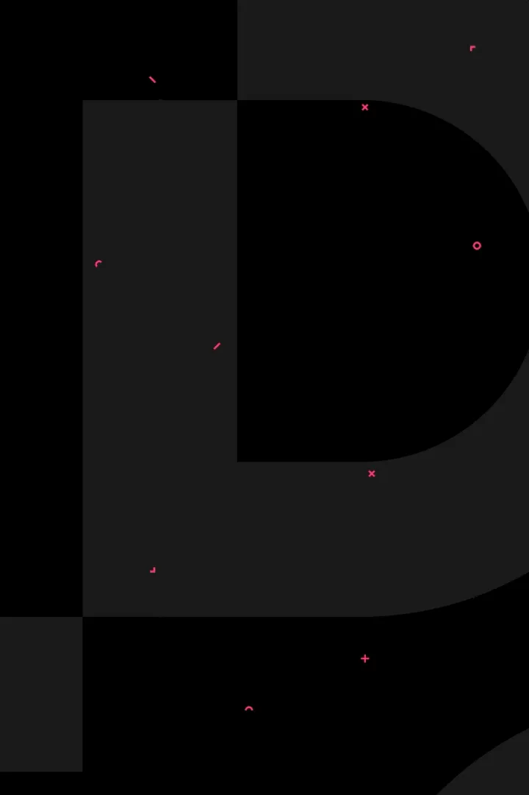
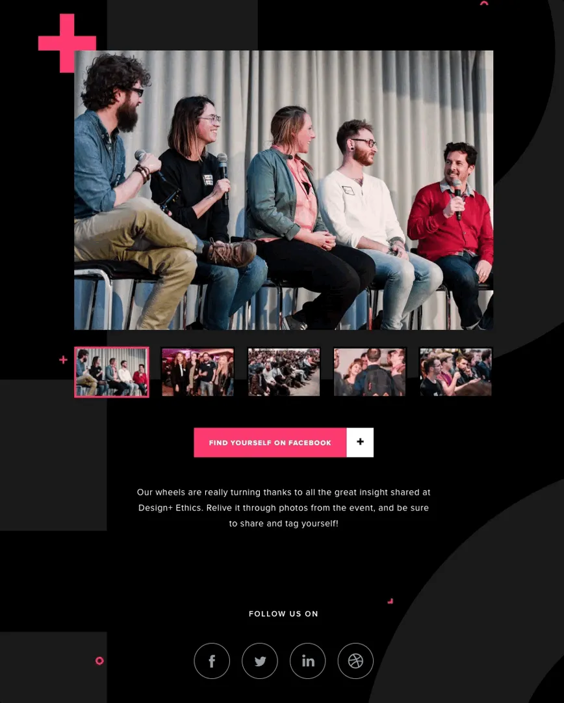
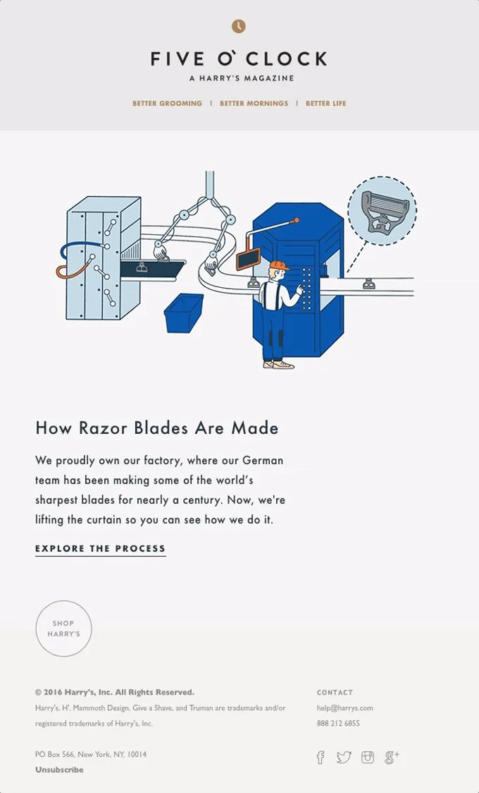
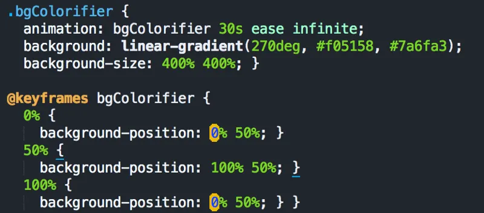

First off, what is Really Good Emails? It’s an Internet website that tries to put together the best emails in the universe in one place. Really Good Emails (RGE for short) aims to be the best showcase of email design and resources on the web. We’re providing transparency into product email and customer email cycles that are not available anywhere else.
Our job is basically finding all the awesome emails that we see and people send to us. We put them in collections, organize and critique them. We are trying to be the epicenter of email marketers, designers, and developers.
People ask us a lot: “What makes a really good email?” It’s really not a secret. It’s on our website. So if you submit an email and it doesn’t get accepted, maybe you should read it, I guess.
Here are the guidelines that we’ve come up with after reviewing thousands of emails:
- The email connects visual design with a good simple hierarchy.
- The content serves the customer more than the company.
- There is consistency across branding, website and app experience. (The website and email look and feel the same)
- The campaign utilizes best-in-class technology (Brands should be pushing the envelope and trying new things in the inbox. That’s what is interesting to us and what we want to share with our audience).
- It’s enjoyable because it surprises and delights (Take the extra step. Even a boring transactional email can be fun to receive).
- The email is likely to perform well (Based on what we know about email marketing).
- It balances live text and imagery (All image emails in 2018 are no no’s).
- It is accessible across devices and screens (Looks good on everything. and can be used by everyone).
Some of these are more important than others.
Verticals shouldn’t compare to their verticals. They should compare outside their vertical. It’s either good or it isn’t.
Those same people from above also ask: “That’s all good and great, but what are you guys really looking at? What do I fix in my emails to get on to your site?” Well I’m glad you asked. Every single email we look at, we also weigh different factors that go into our final decision. This is our internal checklist and maybe it will be helpful to you when your making your email. It’s what we think all marketers should consider before sending an email.
What Are We Looking At?
- Subject Line
- Pre-header text
- Email Layout Patterns
- Images
- Typography
- Whitespace
- Mobile Optimization
- CTA Design
- Text CTA Ratio
- Video
- Animated GIFs (Does it add value)
- Interactivity (An action taken in an email that triggers an event within the same email)
- Personalization
- Voice & Tone
- Footer Finish
- Legal
Want to see our critique process in action? Oh baby, you are in luck. Below are some tear downs of really cool brands that we like to feature. We get a lot of email submissions. Below are a few of the most popular ones and some of our all time favorites.
How Airbnb Sends Really Good Emails
Airbnb is a really great brand. If you follow our website, it’s clear that we have a bit of a crush. They have a inspirational website and easy-to-use app. Their customer communication is smart and personal. They mix fun imagery, design, behavioral segmentation and copywriting. They are our go to when it comes to travel email design.
This welcome email does a great job getting people back into their product after a user signs up. Ah, here we go. Great imagery right up front. Short and sweet. Nice body copy in this email. It clearly tells you “Hey this is the start of your journey with our product.” People can only read so much. It’s to the point.
There's a clear and descriptive CTA. It’s better than the regular “Learn more”. It tells people this email is unique to our our product. “Find a place to call home” stands out to me.
This is a pretty nice looking footer. I’ve seen some bad footers in my day. This one’s pretty nice.
What’s that search bar doing in an email? Can you search in emails now?! 🕵 No, but it gets me where I need to go. In this case, it’s just an image. It gets people to click on it to go to their site. For Airbnb I assume search is the main way to interact with their site. Search bars in email aren’t currently mainstream tech, though some experimentation with forms in email is happening. I personally don’t want to search for something in an email (that’s just me). Including this image however is a better way get people to search for destinations on their website than a regular CTA button. Airbnb has one tiny toe in a dark pattern with this bit of trickery not being quite what it says it is. I’ll give it the green flag because ultimately it gets the customer moving right where they intend.
We reached out to Lucas Chevillard who helps run the emails over at Airbnb. Here is what he had to say about this campaign:
“How do you tell your story when you have 5 seconds of attention? That’s the idea behind this email. We believe that Airbnb can bring you on a great journey no matter how far you travel.” — Lucas Chevillard, Engagement Marketing Manager at Airbnb
It was also the first email to use their newly created Design Language System DLS. Fun fact: Lucas actually stayed with the host in the picture last year in Tokyo. How cool is that? You don’t see that sort of a personal touch in emails these days.
Read our Lessons Learned from Airbnb’s Email Specialist post to learn more about how Airbnb approaches email design.
Overall, what did we learn from this email?
- Use short and sweet retention emails to get users back into your product.
- Don’t have your campaigns try to do everything at once.
- Try out and test new CTAs that are more descriptive.
- Make your emails match up to your branding and web/app experience.
- Use bold imagery to capture your openers attention. When marketers use stock images it takes me out of the email.
- Using hacks like the search bar image show your audience what actions you want them to take.
How InVision Sends Really Good Emails
Okay, so this a great example from InVision. They are our official email BFF.

Off the bat, this email looks interactive. Going to have to take a breather after that entrance. Phew.
Outside of this one looking very nice, there is an animated background. Is this real life? You can also see there’s a CSS animation, sort of loading in the content. Then there’s a background image that is a GIF. A fancy touch instead of a static background color.
They’re also using a custom web font with fallbacks which is pretty great. This email seems more like a gift more than a promotion. It’s something that really stands out from the rest of the emails in my inbox. I have a soft spot for dark background emails 🖤. It’s cool to see them in the wild like this.

There is a slideshow within the email. While a carousel (See this website shouldiuseacarousel.com 🎠) rarely works in emails, here is an example when a slideshow makes a bunch of sense. This interactive element adds a good amount of value to the email for once. Liking how the image is highlighted in the bottom. Being able to see all the image options all at once is a big help. I can click through or just click the CTA.
I appreciate to do the extra work to include that interactive portion to the email. It’s well thought out and works great.
It’s a nice hover effect on that button. Wow. So that’s a pretty easy thing to set up actually and I think it adds a lot of value to the email. CSS hover effects don’t take much time to set up and they add some nice benefits for email clients that support them. Smart.
Social icons that match up to the rest of the branding makes a difference. Nothing is more distracting than ugly social icons and a messy footer.
There isn’t a guide telling you how to use the email. They make it obvious that you should click.
Proud of you InVision.
This is what Clair Byrd, InVision’s former VP of Marketing and Director of Content Marketing had to say about their emails:
“We only send things that are awesome. Our community creates incredible things every day — if we’re not meeting that standard, we’re not providing value.” — Clair Byrd, InVision’s former VP of Marketing and Director of Content Marketing
Read our Lessons Learned from InVision post to learn how not be gross in your emails.
How to not be gross in your emails
What can we take away from this campaign?
- Instead of a plain text message with a link, take a chance to showcase some of the progressive enhancements of email development.
- Push the boundaries by opening the whole toolbox. Interactive carousel module, CSS animations, Google webfonts, and hover effects. Test it all!
- All other bells and whistles aside, the carousel is a great example of cool tech put toward the concrete goal of customer engagement (“Oooh, I wonder if I made it into any of these photos?!”), encouraging some solid social sharing if you were at the event, and some serious FOMO reactions if you weren’t.
How Lingo Sends Really Good Emails
This isn’t your ordinary password reset email. Instead of just having plain text email, they took the time to design a good looking and helpful email. While most password reset emails can be bland, this one goes the extra mile.
Nice logo placement. Good body copy. Focused design. Makes it clear what you should do next. Bold colors, especially the background yellow, to remind you of its importance. Nice to see them experiment with different colors. Illustration that sums up the message pretty clearly.
I like that bottom section that reminds people what Lingo is (…although since people are trying to login but forgot their password — they likely know what the app is.)
Larger than life Reset Password button with minimum text. Branded social icons link to all the accounts, just in case you want to engage more.
Excellent and friendly forgot password email that doesn’t make you feel stupid about forgetting your password.
So good job with that Lingo.
What can we take away from this campaign?
- A focused design and CTA makes it clear what to do next. Press the big ol’ button.
- Use friendly copy when your customer is in trouble.
- Try out bold colors in your emails if it matches your brand.
- Use illustrations to sum up the message.
- Don’t skimp on transactional emails. They are an opportunity to impress.
How Blue Apron Sends Really Good Emails
This is great promotional email example from Blue Apron (woah their logo is actually a blue apron).
This email basically is trying to get a subscriber to sign up for their service and give some money off to incite the purchase.
Liking how they group the different sections. They show the main offer and how their service works. Great hierarchy. First the main thing. Then the other things. Then the last things. That’s all the things. Done.
Nice use of urgency. Including the “24 hours” expiration. Pushes people to make the purchase. Wonder if that offer really disappears?
Actionable CTA backs up the main copy. Instead of “START NOW”, there’s a very clear “GET $40 OFF”. Consistent CTA hitting home that this is a deal.
Free money? Now we’re talking. Who doesn’t love it.
Helpful ingredient list is a good touch. I actually really thought that was pancakes but it’s chicken. 🍗 🥞 🤔 Good use of imagery either way.
Loving how the simple icons show me how the service works. They’re not using a basic free icon pack.
Not bad for a footer. Matching social icons and useful links at the bottom. Notice how the nav is at the bottom and not at the top? Let’s keep it that way. Get right to the offer.
If your customers need those links, having them lower below the main offer is a good option. They will know where to find them. Tell me what you want me to look at first. I don’t need a link to your blog right away.
So what we can learn from Blue Apron?
- Use an offer with clear copy and supporting CTA.
- Include tasty imagery to show your product in action.
- Create your own icons for an associated action instead of counting. Iconography and steps clearly show how the product works and what will happen next.
- Bottom navigation lets the offer be the main focus. If people need the links they will look for them.
- Social icons that match your branding or the rest of the email is a nice touch.
- Include a link to download your app if you have one.
How Harry’s Sends Really Good Emails
It’s all about that GIF. Standing ovation for that Harry’s GIF. I’ll wait…

Big fan of this body copy not being full width.
Clever name for a newsletter. Much better than “Newsletter Issue 5”.
Looks like they are using the “Museo Sans” web font as well. Using a web font (live text) with fallback makes a big difference. Lots of popular email clients now support it. Convince your boss and try it out! Many people will appreciate the clearer text. Older email clients won’t even realize that they’re looking at a web font fall back anyways.
I like how the “SHOP HARRY’S” CTA is laid out, but it might be too subtle. Wonder if more people would click on the “EXPLORE THE PROCESS” plain text link instead.
This one is the complete package. You call tell Harry’s puts some time into their campaigns.
This quote from Adrien Grey at Harry’s sums up this campaign perfectly:
“This email is telling a compelling story. The GIF elevates a factory moment to become playful and captivating at first glance, while the copy leans into the article ending with suspense — suspense that can can end with the click of a button. There’s also something to be said for it’s simplicity. It’s very digestible. Within seconds you’ve absorbed the entire thing.” — Adrien Grey, Harry’s
The GIF links out to a blog post, so this email is really just a tease.
See how Harry’s is using edge-to-edge photos in their emails in our Email Design Trends of 2017 (so far) recap post.
So what can learn from Harry’s?
- GIFs and animation attracts attention and can support the message. Fun and easy way to experiment. Plan for image fallbacks on clients like Outlook.
- Just like on a website, brands can use their web font in an email. Web safe fallbacks are used when web fonts are unavailable. Better legibility across devices and consistent brand experience from email to website are some benefits.
- Break up sections of email with transition images.
- Use short and sweet copy that brings your audience to a landing page or blog post. Tease content to get them to click through.
How Code School Sends Really Good Emails
Always impressed with Code School emails, but this one is different in some way… Oh yea that’s right it is changing colors. No big deal. Notice that the background has a rotating gradient on it.

It’s a little subtle, but it’s a rotating gradient for the background. Let’s look at the code snippet because we are big nerds.

Awesome transparent image graphic for the header image.
One-column emails might be my favorite. These mobile first emails adapt to desktop and scale images.
Helps consumers easily navigate the email without overwhelming them. One message. One CTA.
Lucky us! Another email with a CSS button. You can easily code hover effects with CSS so you don’t have to slice lots of images. Prettttty.
Fun fact: Emails with a single, clear CTA are shown to increase sales. Short CTAs that motivate people to act are key. Makes it obvious what a consumer should do next. Also easier to A/B test one CTA to optimize performance.
This email does one thing really well and lets the landing page do the selling.
These social share buttons are clear and stand out. Why not get your captivated audience to help spread the word while you can?
Bottom sections of emails asking for consumer feedback or providing a direct channel help build trust. Even for brands with a noreply email address, you can listen to what your customers think about your emails with a quick survey or feedback related email address. Thanks for being so chill and helpful Code School!
Dan Denney from CodeSchool dropped some knowledge with his explanation:
“I loved that the brand image went from day to night and wanted to “simulate” that in some way, tying it in to a weekend of time. I hadn’t seen anyone do the rotating gradients in an email and figured it would blow some minds that it was even possible.” — Dan Denney, Code School
So that gradient represents time passing. Mind blown. Emails can be very simplistic when you look at them, but can have a much deeper meaning. Those are the types of campaigns we should be sending.
So what can we learn from Code School?
- Make sections of your email content shareable. Why not get your captivated audience to help spread the word while you can? Does it hurt to try?
- One column emails work great on desktop and mobile.
- Single CSS buttons are the way to go. They focus the CTA and make it obvious what to do next.
- Add a feedback or support section to the bottom of the email. Shows brand has a customer support focus and gives customers the opportunity to speak up about their experiences.
- Experiment with new technology (rotating gradient background colors). There are usually fallbacks that still look good.
How TunnelBear Sends Really Good Emails
This is an email TunnelBear sends when you cancel your account. Even though you are leaving as a customer, they still are trying to engage with you.
Nice voice and tone right up front. Even though this is a downgrade email, it is still super friendly. They took a “negative” action and had fun with it.
Each plan is symbolized by a bigger bear. So by downgrading, they shrunk you from a big bad grizzly to a tiny bear cub.
Bonus Points: The email reminds you that you have full access to your account till the end of the month. This customer might come back because of a fun email like this.
Overall, a great campaign to keep the experience enjoyable — even if it is canceling an account.
Read more about how to engage your customers with this post from Roland Pokornyik.
What can TunnelBear teach us about breaking up?
- Use copy, voice, and supporting imagery to get your message across.
- Build your brand and personality into everything you send.
- Keep the experience of canceling an account enjoyable.
- Remind your user that they can still use your service. They might come back.
- Ask for some honest feedback when a customer is leaving.
How Lyft Sends Really Good Emails
Last but not least, here’s one from Lyft. Some really good personalization in this email makes it feel one-to-one.
Look at all of this great personalization! Location and the season. Impressive!
Looks like this email is to activate the account. Showing local popular destinations and the compared prices make this one a no brainer.
Even the icons match up to each trip! How many versions did they make?
Overall this email has great hierarchy and branding. Another email using a custom web-font. This font is used across all of Lyft emails.
Nice referral module with social and email sharing. Easy to include this in every templated email you are sending out.
The “2/4” at the bottom shows how many emails I can expect to get in this onboarding sequence. This email really feels 1-to-1. Like it was sent just to me.
Nick Allen from Lyft sheds some light on this series:
“For every send, we ask ourselves if the recipient would know why they received the message, and understand that the content is meant just for them. We consider email and push notifications an extension of the product experience, and always push ourselves to use data to make the content personally relevant and meaningful. We’ve built our business around treating people better. Respecting the inbox is one way we strive to live this value.” — Nick Allen, Head of Engagement at Lyft
Making their email very personal and making it feel just for you is exactly what they are trying to do.
What did we learn from Lyft?
- Deeply personalized emails go farther than just FNAME.
- Email should match website and app experience. It should be familiar, but still take advantage of the platform.
- Utilize custom iconography if it adds to the message.
- Use sequence indicators to let your customers know that they can expect future campaigns.
- Include a standardized module to promote referral sharing.
How You Can Send Really Good Emails
Hope these email tear-downs helped you learn more about what we are looking for and how you can send Really Good Emails.
- The email connects visual design with a good simple hierarchy.
- The content serves the customer more than the company.
- There is consistency across branding, website and app experience. (The website and email look and feel the same)
- The campaign utilizes best-in-class technology (Brands should be pushing the envelope and trying new things in the inbox. That’s what is interesting to us and what we want to share with our audience).
- It’s enjoyable because it surprises and delights (Take the extra step. Even a boring transactional email can be fun to receive).
- The email is likely to perform well (Based on what we know about email marketing).
- It balances live text and imagery (All image emails in 2018 are no no’s).
- It is accessible across devices and screens (Looks good on everything. and can be used by everyone).
Have you seen an email that just made you smile, was well designed, or that you just felt we should feature? Send it our way and tell us why you think it’s a Really Good Email.
Design Better. Spam Never.